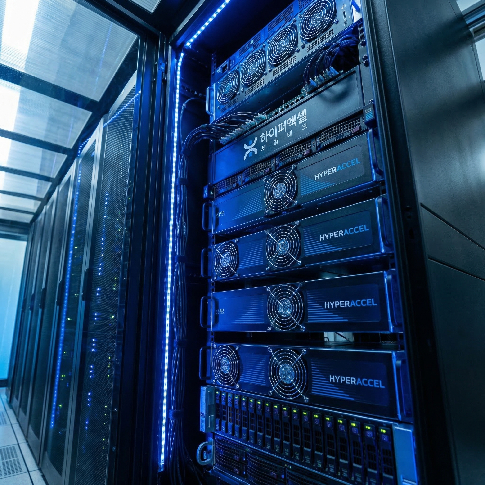

A Korean startup called Hyper Accel just threw down the gauntlet. Their Bertha 500 AI chip claims five times the efficiency of Nvidia GPUs and twenty times the throughput per dollar. Built on Samsung's 4-nanometer process and co-developed with Naver Cloud, it's targeting data center inference. Samples are out now, with mass production slated for early 2027. Nvidia might finally have some real competition.
The Announcement
On March 18, 2026, Hyper Accel unveiled the Bertha 500, a dedicated AI inference chip designed specifically for large language model workloads. The Seoul-based startup claims their architecture delivers up to 5x better energy efficiency compared to Nvidia's current data center GPUs, while offering 20x more throughput per dollar spent. These are not incremental improvements — if verified in production, they represent a fundamental shift in the economics of AI inference.
The Technology
The Bertha 500 is built on Samsung's advanced 4-nanometer process node, giving Hyper Accel access to cutting-edge manufacturing capabilities. The chip uses LPDDR memory and a dataflow-optimized architecture specifically designed for transformer-based models. Unlike general-purpose GPUs that handle everything from graphics to AI, the Bertha 500 is purpose-built for inference — the process of running trained models to generate responses, predictions, or outputs. This specialization allows for significant efficiency gains over more general hardware.
The Partnership
Hyper Accel didn't develop this in isolation. The chip was co-developed with Naver Cloud, one of Korea's largest cloud computing providers. This partnership gives Hyper Accel a built-in customer and testing ground for their silicon. Naver Cloud's infrastructure demands provide real-world validation that laboratory benchmarks often fail to capture. The collaboration also signals that Korean tech giants are serious about building domestic AI capabilities rather than relying entirely on American hardware.
The Timeline
The roadmap is aggressive but realistic. Sample chips are already available to select partners, allowing for early integration testing and workload validation. The bring-up phase is scheduled for September 2026, when the chip will undergo intensive testing and optimization. Mass production is targeted for early 2027, which would put Bertha 500 chips in data centers roughly a year from now. This timeline puts pressure on Nvidia to accelerate their own roadmap.
The Competitive Landscape
Hyper Accel joins a growing field of Nvidia challengers. Rebellions, another Korean startup, has already made waves with their Atom chip. FuriosaAI is pushing forward with its own inference-focused architecture. What makes this moment significant is the convergence of advanced manufacturing (Samsung's 4nm), proven design methodologies, major cloud provider partnerships, and a market hungry for alternatives to Nvidia's pricing and supply constraints. The question is no longer whether someone can challenge Nvidia — it's whether any of these challengers can achieve the scale and software ecosystem needed to truly compete.

Category: Tech Briefing
Published: March 18, 2026
— Howard